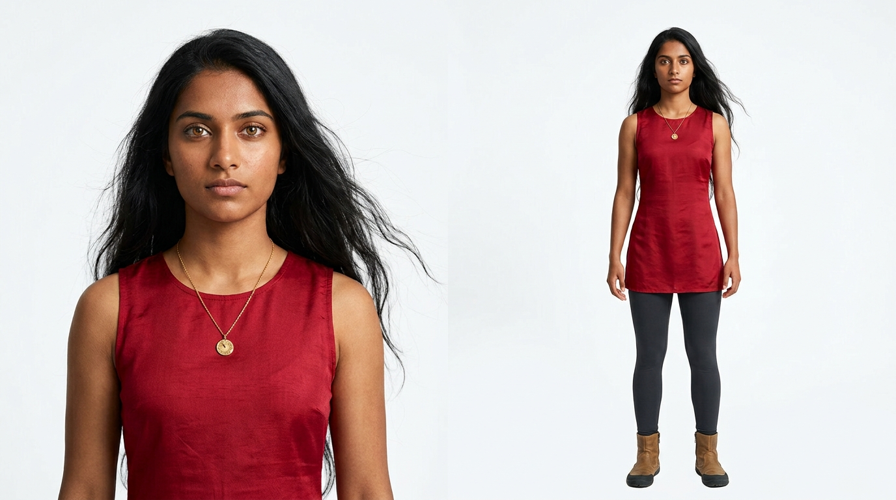
Case Study · Episode 12 · AI Dream-Chase Short
CHASED AWAKE: seven wonders, one dream
It's the dream everyone has had — something is behind you, every exit leads somewhere stranger, and you can't stop running. Thalia, a teenage lucid dreamer, sprints through the seven wonders of the modern world with a Shadow of black smoke and obsidian one step behind her — until, on the arm of Christ the Redeemer at sunrise, she stops running and turns around. Fifty-five seconds, nine scenes, no dialogue. Written with Claude, storyboarded end-to-end in Google Flow's Storyboard Studio, animated frame by frame.
The finished film · 48 seconds, nine scenes, seven wonders — Topaz-upscaled to 1440p,
scored with "Worlds in Motion." The poster frame is the climax: the moment she stops running.
Overview
Board the whole film before you spend a second of video
The method this time: treat the AI studio like a real one. A finished shot-by-shot script first; then a full storyboard pass in Google Flow's Storyboard Studio, where every character, wonder and prop is locked as a reference asset before any video is generated. By the time the video engines ran, there was no creative decision left to gamble on — only motion.
9Scenes · no dialogue
29Storyboard frames
15Locked assets
7Wonders of the world
48sOne accelerating chase
The Pipeline
Step by step
01
The Script
The film was written before any tool was opened. Working with Claude, the idea — "a teen chased through the seven wonders, each exit leading into the next, until she wakes" — became a nine-scene screenplay with the camera grammar built in: an ECU of glowing eyes to open, high angles and extreme wides while she's hunted, a deliberate switch to a low angle the moment she stops running. Scene durations shrink as the chase accelerates, then the longest shot of the film is held for the turn.
A second Claude pass converted each scene plus its reference frame into one production-ready paragraph — a single continuous prompt carrying character description, action, camera move, lighting, sound design and grade, ready to paste into any video model.
Claude · writer's room One paragraph per sceneScene 2 prompt (abridged)
Ultra-realistic cinematic extreme wide shot at foggy purple dusk on the Great Wall of China: Thalia … sprinting away from camera as the Wall snakes toward a watchtower whose doorway blazes with warm golden portal light; behind her the bricks tear loose and swarm into a churning mass of black smoke veined with molten gold … low drone track following her run … sound design of pounding footsteps, grinding masonry, her ragged breathing … no dialogue, 4K photorealistic, no text or watermark.
Fig. 1 — the master-prompt format: framing first, then subject, threat, portal,
camera, sound, grade. Every scene got exactly one of these.
02
The Studio
Inside Google Flow: New project → Tools → Discover → Storyboard Studio, visual style set to Realistic at the door — the style choice cascades into every asset and frame generated after it.
The script window takes the story as a prompt and returns a proper screenplay — scene headings, action lines, transitions — which was then rewritten line by line to match the Claude draft. The screenplay is the project's spine: every asset and storyboard frame Flow generates from here on refers back to it.
Google Flow · Storyboard Studio Style: Realistic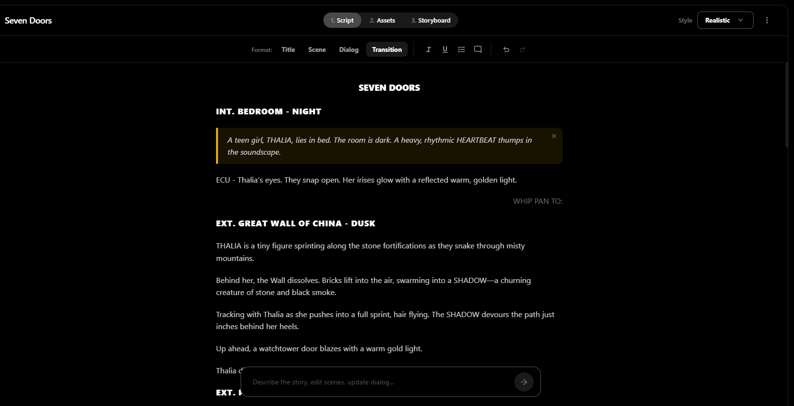
Fig. 2 — the script tab: screenplay formatting with scene headings, sound notes
and a WHIP PAN transition, editable like a document.
03
The Cast
The Assets tab is where continuity is won. Autofill read the screenplay and proposed the cast: Thalia — warm copper skin, waist-length windswept black hair, crimson silk tunic, charcoal leggings, tan parkour boots, a gold sun-dial pendant — and the Shadow, a shapeshifter of volcanic smoke and jagged obsidian, veined with pulsing gold.
Each was generated as a character sheet on a neutral background — portrait plus full-body turnaround — so every later frame draws from the same reference. Flow even wrote them backstories: Thalia is a lucid dreamer who can reshape the dream through touch; the Shadow is her own anxiety, guarding the subconscious.
Autofill characters Nano Banana image genThalia · character sheet
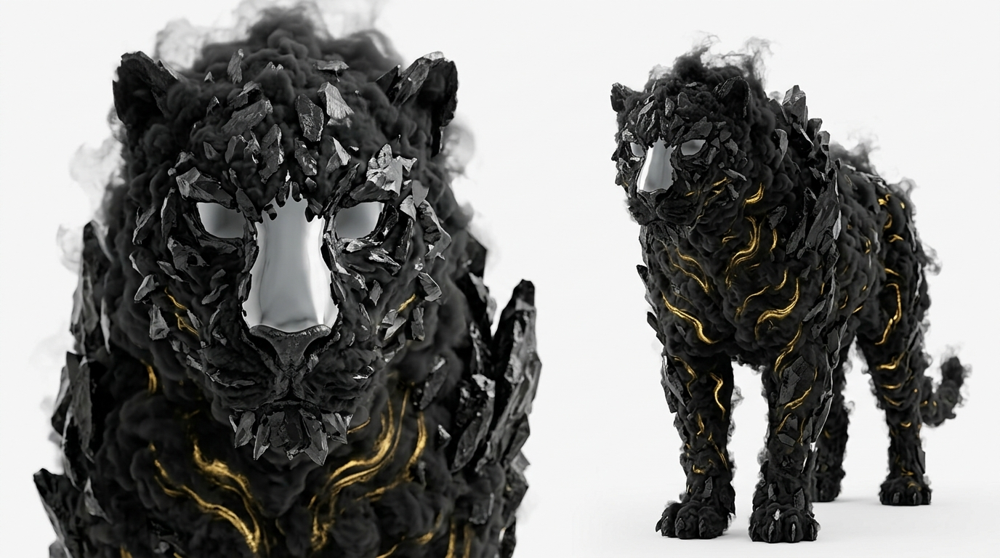
The Shadow · jaguar form
Fig. 3 — the two-view character sheets. The Shadow's mirror-chrome face is the
film's ending hidden in plain sight: what she's running from reflects her.
04
The World
Eleven locations and two props, all autofilled from the screenplay and then curated: the seven wonders, plus the connective tissue — the bedroom, the Siq canyon, the Treasury facade, El Castillo — and the two objects that carry the story's magic: the Intihuatana stone Thalia slams her palm onto, and the Taj Mahal snow globe that ends the film on her nightstand.
Each location arrives as a four-view board — establishing wide, detail, alternate angle, atmosphere — so the storyboard stage can cut around a place without reinventing it. The glowing gold portal is already present in the location plates, keeping the film's one recurring visual rule consistent from the start.
11 locations · 2 props Four-view boards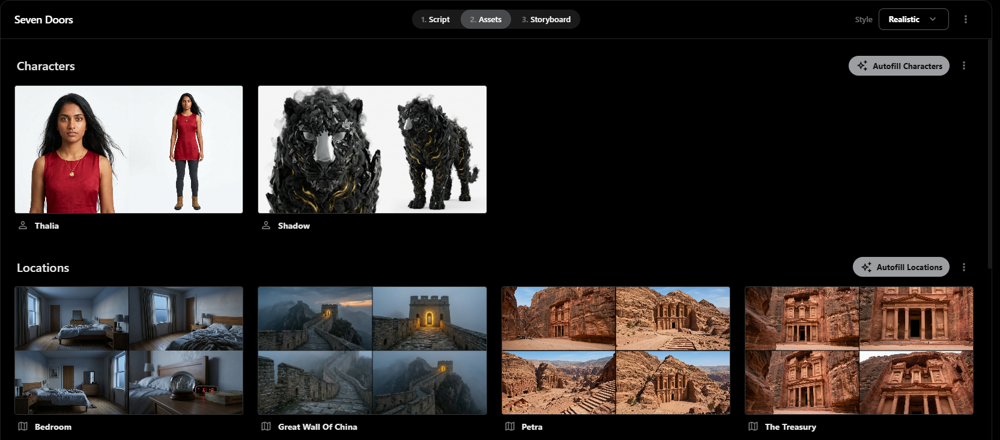
Fig. 4 — the Assets tab: characters and four-view location boards, one Autofill
away from the screenplay.
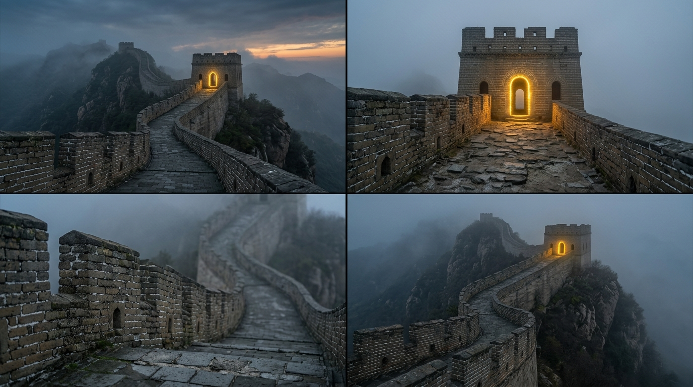
Great Wall · location board
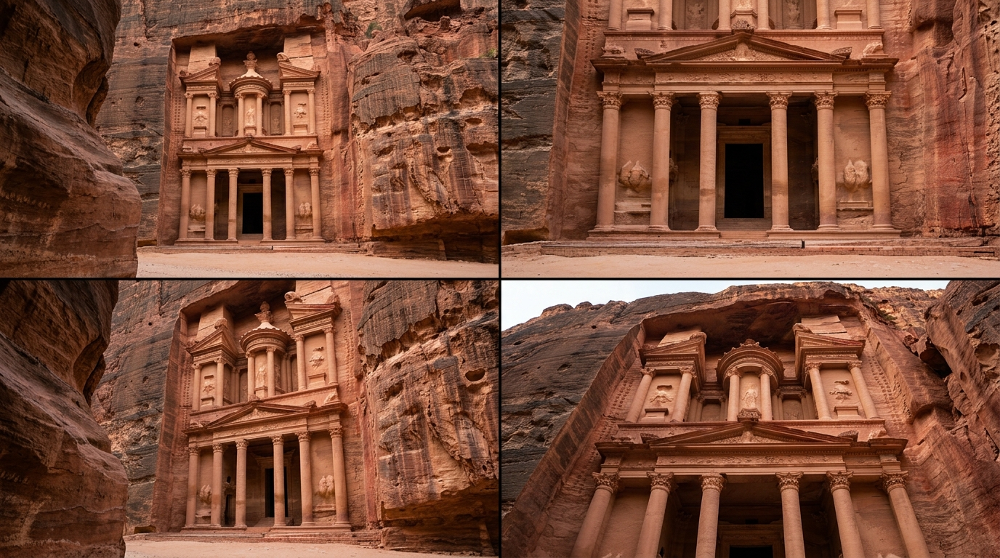
The Treasury · location board
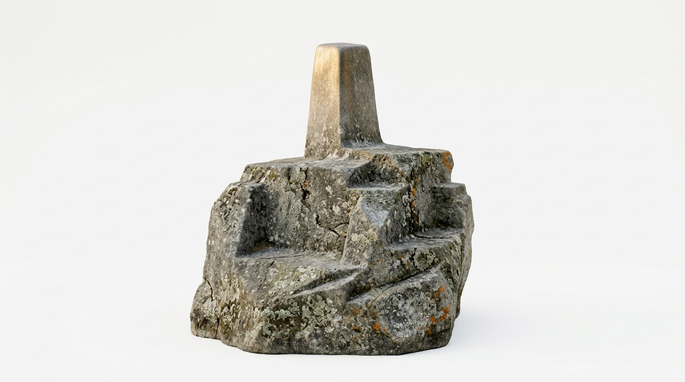
Prop · Intihuatana stone
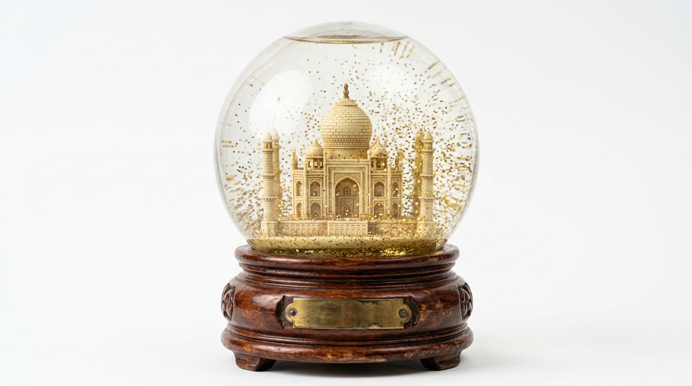
Prop · the snow globe
Fig. 5 — world and props as clean reference plates. The snow globe was designed
asset-first so the film's final shot and Scene 1's blurred background could show the identical object.
05
The Storyboard
The Storyboard tab holds the film's metadata — every scene from the screenplay, with an Autofill Scene button per scene. Flow generated 29 frames across the 9 scenes, each one linked to the reference assets it uses, so Thalia's tunic, the Shadow's obsidian and the wonders' architecture stay consistent frame to frame.
Every frame carries three layers of intent, not just a picture: a visual description, a motion description (the camera move), and an audio description (the sound design). That trio is effectively a pre-written video prompt — the storyboard does the prompt engineering for you.
Autofill scene · 29 frames Visual + motion + audio per frame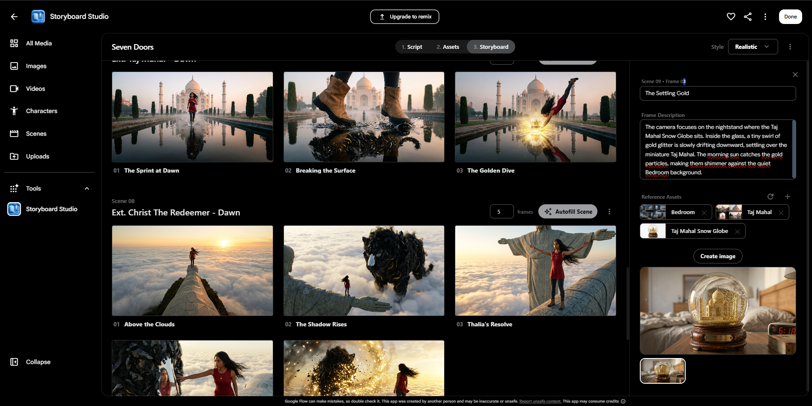
Fig. 6 — the Storyboard tab: frames per scene on the left, the inspector on the
right with frame description and its linked reference assets (Bedroom · Taj Mahal · Snow Globe).
One frame's metadata — Scene 01 · "The Golden Awakening"
Visual — extreme close-up on Thalia's eyes as they snap open; irises pulse with an unnatural golden light cutting through the dark bedroom.
Motion — camera locked in a tight macro shot, capturing the minute detail of the glowing irises.
Audio — the heartbeat spikes in volume and tempo; a faint ethereal hum rises in pitch.
Fig. 7 — what a storyboard frame actually stores. Picture, camera and sound —
three prompts in one object.
06
The Save
Before closing the project, one non-negotiable habit: Save the story. Flow downloads the entire production as a single local JSON — this project's file weighs 69.6 MB because it embeds everything: the full screenplay in markdown, all 15 assets with their images encoded inline, and all 29 frames with their visual, motion and audio text.
The warning is earned: clicking Done without saving can leave the project unrecoverable in the cloud. With the JSON on disk, the whole film — cast, world, board — reloads anywhere, anytime. It's the production bible and the backup in one file.
Save the story → local JSON 69.6 MB · everything inlineInside the save file
{
"projectTitle": "SEVEN DOORS",
"globalStyle": "Realistic",
"fullMarkdown": "# …the entire screenplay…",
"assets": [ 15 × character · location · prop,
each with physicalCharacteristics,
backstory and inline images ],
"frames": [ 29 × visual · motion · audio ]
}
Fig. 8 — the anatomy of the 69.6 MB project save. The screenplay, the cast sheets
and every frame's intent, one portable file.
07
The Animation
Video generation ran frame by frame, two tabs open — the storyboard on one side, the media library on the other. For each shot: drag the chosen frame into the agent prompt, paste the scene's production-ready paragraph, and swap character mentions for the avatar logic names defined in the Characters section — that's what keeps faces (and, in dialogue films, voices) consistent across clips.
Engine settings per shot: Omniflash as the cost-effective default — especially when a scene holds more than two characters — aspect ratio locked to 16:9 throughout. Animation prompts follow one discipline: preserve the frame, choreograph only the change — the creature dissolves, the glitter settles, the camera barely moves. Then the clips went to an external editor for the cut.
Frame → agent prompt Omniflash · 16:9Image-to-video prompt (abridged) — the climax
Animate this exact frame preserving its composition, characters and lighting: … the creature continues to disintegrate in slow majestic motion, obsidian fragments igniting into golden embers that sweep upward in a great spiraling arc … her body holding still and unafraid … camera holds nearly locked with a very slow push-in, stone arm geometry remaining rigid and unchanged … the girl remains perfectly stable … no dialogue, 4K photorealistic.
Fig. 9 — the animation discipline: the still owns the composition, the prompt owns
only the motion. Stability instructions ride at the front of the prompt.
The Board
Nine scenes, one golden thread
The hero frame of each scene. Watch the film's one recurring rule: every exit — door, fissure, trapdoor, cenote, stone, pool, reflection — glows the same warm gold, so the audience always knows where "out" is. And gold is also the color of her eyes, the shockwave, the shatter, and the glitter in the snow globe: the way out was hers the whole time.
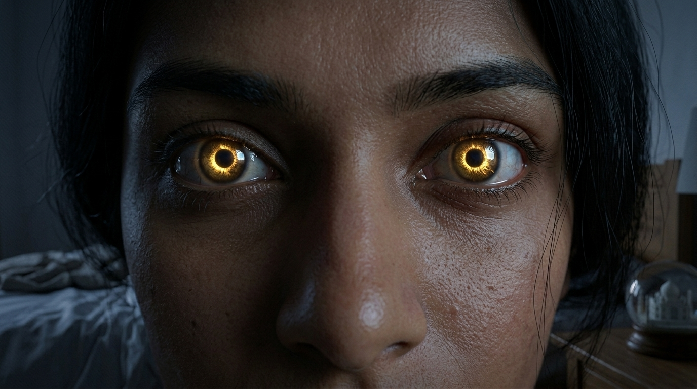
01 · The golden awakening
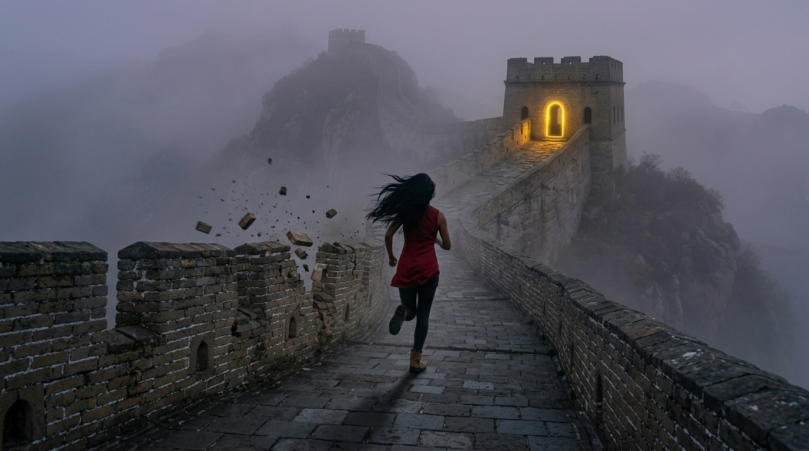
02 · The Great Wall
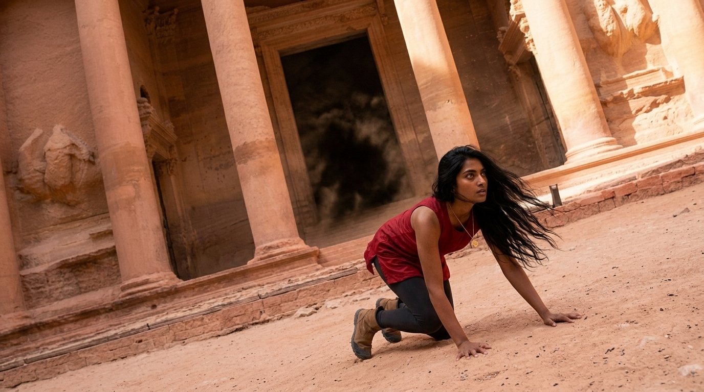
03 · Petra
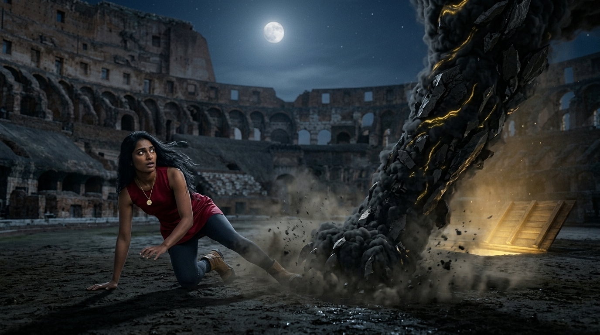
04 · The Colosseum
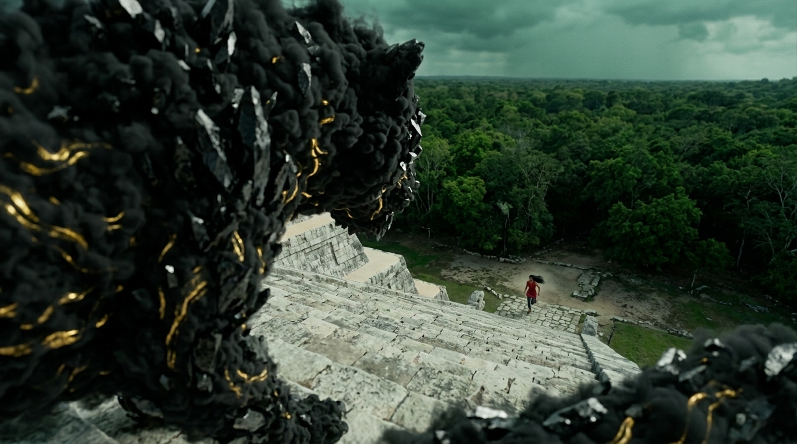
05 · Chichén Itzá
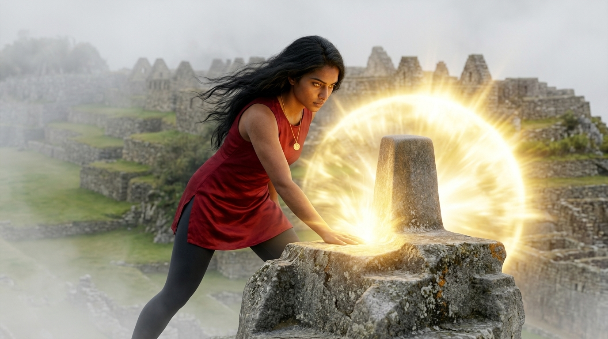
06 · Machu Picchu
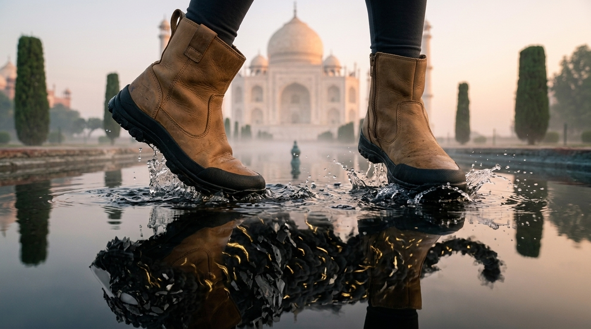
07 · The Taj Mahal
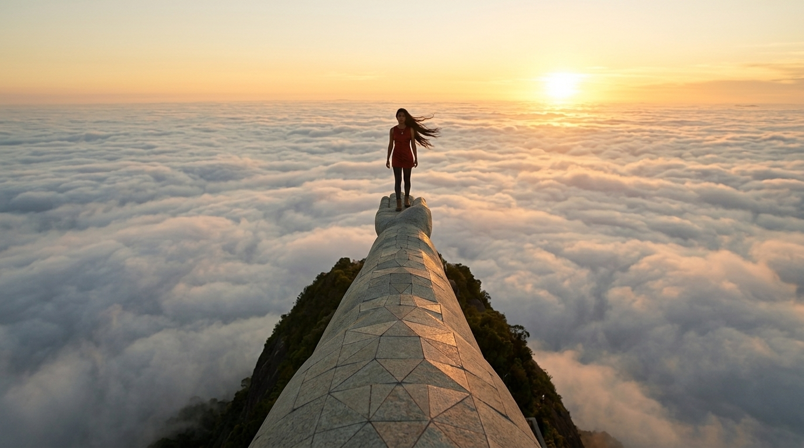
08 · Christ the Redeemer
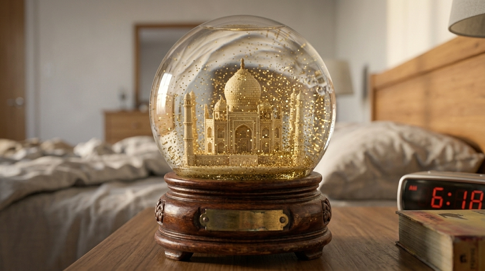
09 · The settling gold
Continuity check — same tunic, same pendant, same boots, same
gold across nine locations and three times of day. That's the asset lock doing its job.
The Cut
Pacing by subtraction
The chase works because every scene is shorter than the audience expects, and the film's longest held shot is the one where nothing chases her at all. The timings below are the shooting plan; the finished cut runs 48 seconds — tighter still, as chases should be.
| TC | Scene | Beat | Framing | Dur. |
|---|---|---|---|---|
| 0:00 | 01 · Bedroom, night | Her eyes snap open, glowing gold | ECU | 4s |
| 0:04 | 02 · Great Wall | The Wall dissolves into the Shadow; she runs | EWS · high | 7s |
| 0:11 | 03 · Petra | Tumbles out of the Treasury; sandstorm behind | WS · low | 6s |
| 0:17 | 04 · Colosseum | The stone jaguar's paw slams down | MS · handheld | 6s |
| 0:23 | 05 · Chichén Itzá | The serpent pours down the pyramid | OTS | 6s |
| 0:29 | 06 · Machu Picchu | Palm on the Intihuatana — gold shockwave | MS → CU | 5s |
| 0:34 | 07 · Taj Mahal | She runs on the water; the Shadow lives in the reflection | ECU · slow-mo | 6s |
| 0:40 | 08 · Christ the Redeemer | She stops. Turns. The Shadow shatters to gold | EWS → low MS | 9s |
| 0:49 | 09 · Bedroom, morning | Awake. A smile. The glitter settles in the globe | ECU | 6s |
The camera argument — high angles and extreme wides while
she's prey; the film's only low angle on Thalia arrives the moment she stops running. The grammar hands her
the power before the story does.
The Footage
Raw clips, straight from the engine
Ungraded, unedited generations — each one animated from its locked storyboard frame with a motion-only prompt. The stills carry the composition; the clips only have to move.
The Wall · scene 02
The serpent · scene 05
The water run · scene 07
The wake · scene 09
Worth pausing on — in the water run, the Shadow exists only in
the reflection: above the waterline there's nothing behind her. Dream logic the image stage made cheap and the
video stage made move.
Behind the Scenes
What we learned (and what nearly broke)
The honest notes — six lessons this film paid for.
Fix the still, not the prompt
The climax kept warping — a person standing on a statue's arm is geometry video models love to melt. Rewriting the video prompt never fixed it. Regenerating the still — with the Shadow already mid-shatter, so the clip only had to finish the dissolve — fixed it in one take. When motion breaks, move the problem upstream to the image.
One emotion per clip
The wake-up asked for fear → relief → smile in five seconds; the
engine rushed it and the smile read fake. The fix was editorial, not generative: generate only
freeze, breathe, blink, soften and let the cut to the snow globe deliver the smile. The edit is
an emotion engine too.
Split the beat
A sprint down steep pyramid steps is one of the hardest motions in current models — legs jitter and slide. Plan B was two shots: a near-static reaction close-up (smoke erupting above her), then the wide OTS chase where her figure is small enough to stay clean. Two easy generations beat one impossible one.
Name the dream, not the device
The working title Seven Doors died in review: only two exits are literally doors — the rest are a fissure, a trapdoor, a cenote, a stone, a pool. Chased Awake names what the film is actually about — the dream everyone has had — and gives the ending away only after you've seen it.
Early tokens win
Video models weight the front of a prompt. Stability instructions —
animate this exact frame, the girl remains perfectly stable, stone geometry
rigid and unchanged — moved to the opening clause of every animation prompt. Style adjectives went to
the back, where they can't outvote the physics.
Save the story. Always.
Storyboard Studio's local save is the whole production in one
JSON — 69.6 MB with the screenplay, all 15 asset sheets and all 29 frames embedded. Clicking
Done without it can orphan the cloud project. The file reloads everything; it became the
production bible this case study was written from.
Toolbox
Everything used, and what it did
Google Flow · Storyboard Studio
Script → assets → 29-frame storyboard
Script → assets → 29-frame storyboard
Nano Banana
Character sheets, location boards, props & frames
Character sheets, location boards, props & frames
Veo & Omniflash engines
Frame-locked image-to-video, 16:9
Frame-locked image-to-video, 16:9
Claude Code
Script, shot grammar, prompts & this case study
Script, shot grammar, prompts & this case study